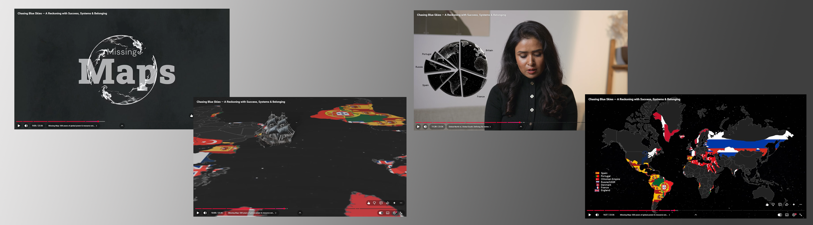

Overview
Two years.
One complete world built.
This wasn't a single project — it was a two-year creative partnership. I joined the journey of Rising Lotuses before its publication, working directly with the author to understand the book's concept, voice, and vision from its earliest stage. That deep familiarity became the foundation of every design decision that followed.
The book, authored by Shivani Baghel and illustrated by Sadhvi Konchada, was published by Penguin Random House and available in 15+ countries. My work covered the India launc , documentary animation, website, and the author's entire social media visual identity.
The Book Launch
From page to stage —
India meets Rising Lotuses.
I was actively involved in the India launch of Rising Lotuses at the New Delhi World Book Fair — Pragati Maidan. The book had already been published in 15 countries; this was its India debut, and every design element needed to match the weight of that moment.
My involvement began before publication — which meant I understood the book's soul, not just its cover. For the launch, I designed the invitation cards, conceptualised a 3D display stand to attract visitors, and created bookmarks to engage readers. I coordinated directly with the printing team and prepared print-ready PDF files that clearly communicated the design and assembly requirements.
Ideation


Book launch invitation cardt · Stand concept · Final bookmark designs
Book

Seeing Rising Lotuses displayed at the New Delhi World Book Fair was a deeply rewarding moment for me. After spending nearly a year contributing to the project, watching the book exist beyond screens and drafts — held by readers, displayed across the venue, and officially launched in India — made the entire experience feel real.
The Documentary
Chasing
Blue Skies
Worked as a Motion Graphics and Thumbnail Designer for a documentary exploring colonization and its long-term global impact.
My role focused on transforming complex historical information into visually engaging narratives through motion design. I designed animated bar graphs, pie charts, and world map visualizations to showcase timelines, scale, and the geographical spread of colonization over time. I also created symbolic visual sequences to communicate the extraction of wealth from colonized nations.
The goal was to simplify dense historical data into impactful visual storytelling that enhances audience understanding and engagement.
Ideation


Documentary ideation & storyboarding · Blender 3D workspace
Infographic Animation
Visualizing colonization through motion-driven storytelling.
Text Animation
Simple typography animation enhanced through atmospheric visuals.
Blender 3D
Used Blender to make a ship visual that explains the extraction of wealth from colonized nations.
Premiere Pro Edit
Used Premiere Pro to combine visuals, motion graphics, and sound into a cohesive narrative.
Watch the Documentary
Chasing Blue Skies — Documentary Animation · YouTube

Selected frames from the Chasing Blue Skies documentary animation
Digital Presence
Website, reels &
a voice across screens.
The author’s digital presence was built from the ground up — a personal website, a consistent social media visual identity, and a series of reels designed to carry the author voice to new audiences on Instagram and YouTube.
Every reel was edited with the same visual language of the author’s personality and the book—warm, purposeful, and elegant. This included the edited testimonials of the book, the launch video, and the book promotion content.
"The best design doesn't start with aesthetics.
It starts with truly understanding what someone is trying to say."